Before：Git HEAD 743d7b3。After：目前工作區修改。相同測試資料、1440 × 1000 桌面視窗、淺色主題、實際頁面，完整頁面截圖。開發伺服器；隱藏開發工具浮標。
常駐提醒設定與說明改為收合；回報區塊移到帳號選單。
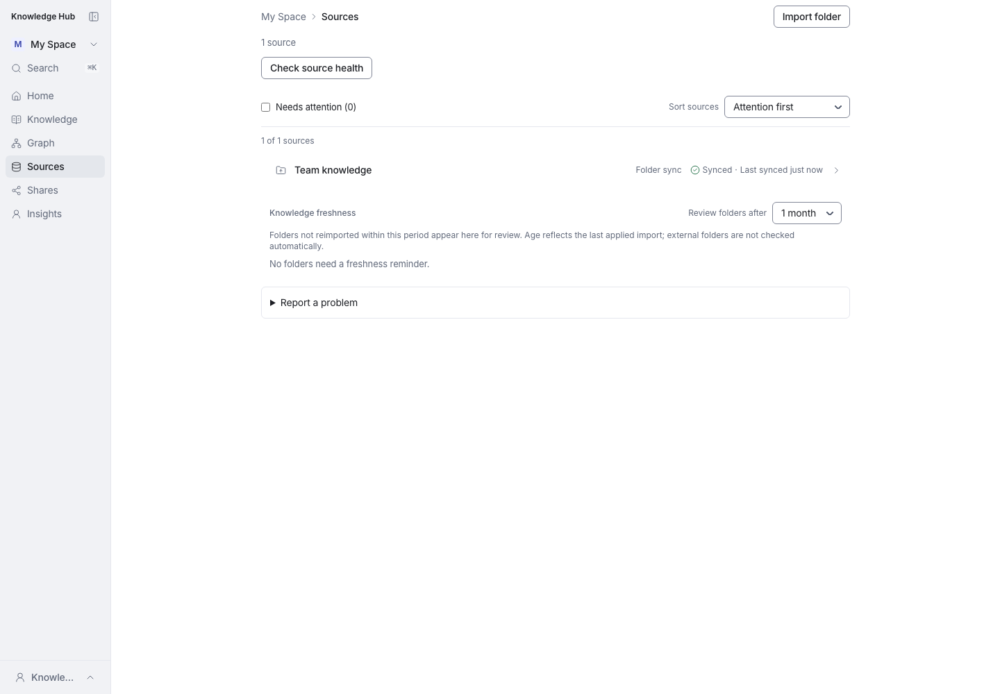
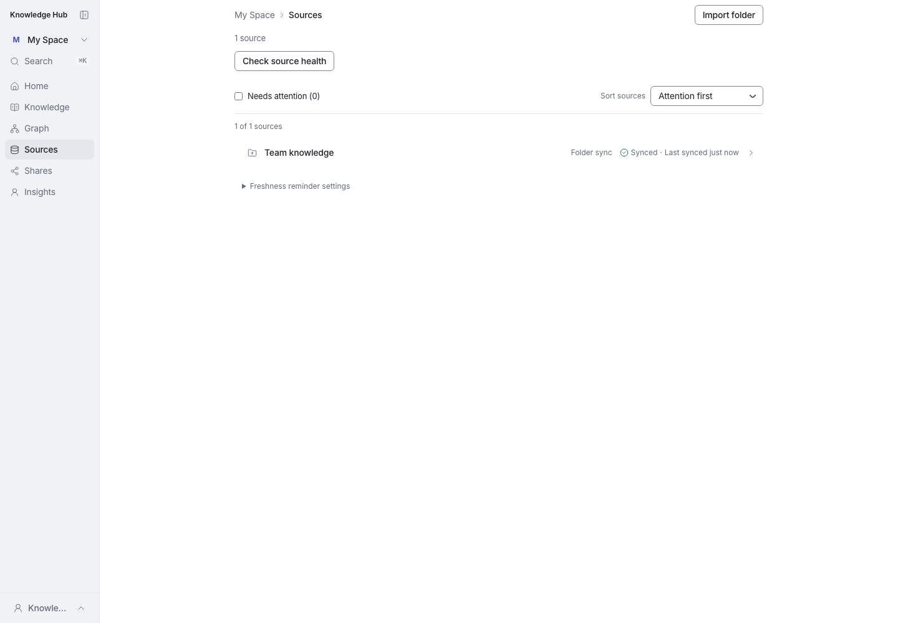
合併頁首說明，移除 sample 重複段落，排除規則收合。
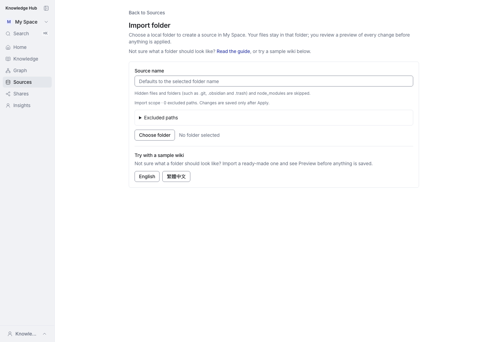
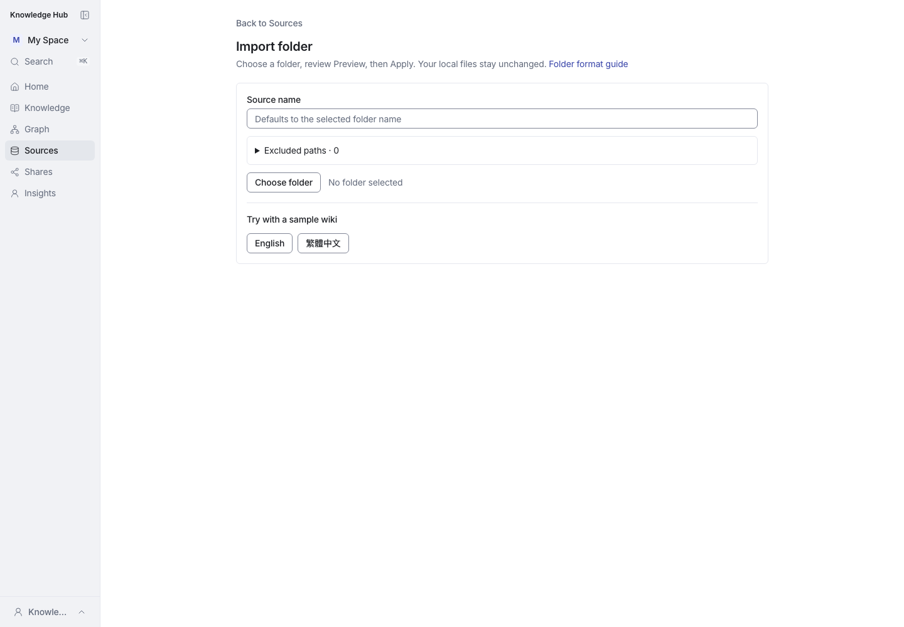
移除重複的完整資料夾指示與頁首同步版本。
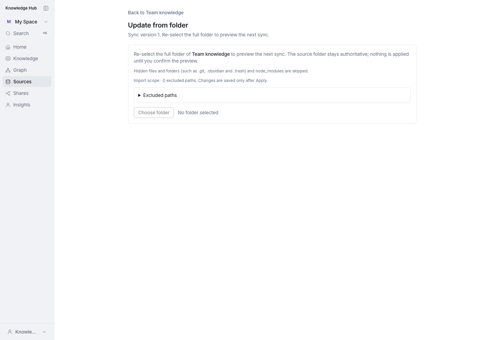
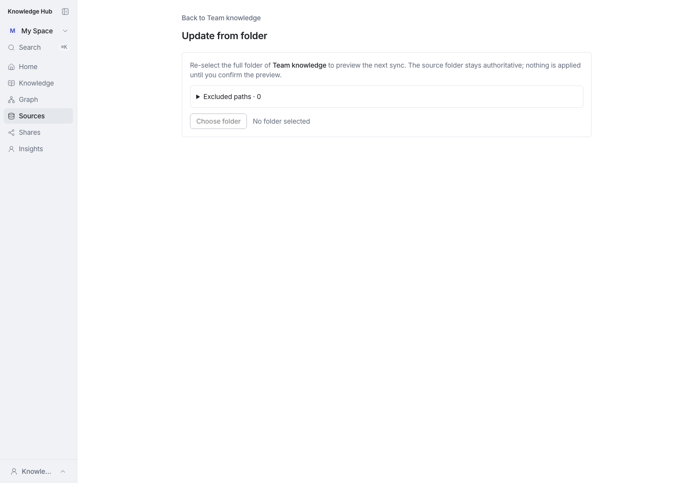
篩選器定義移到 About graph filters。
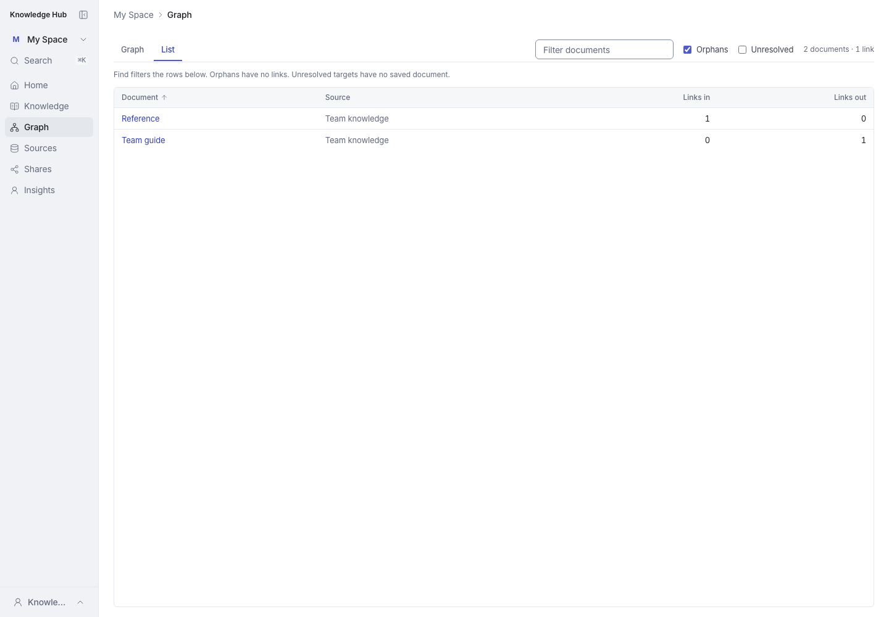
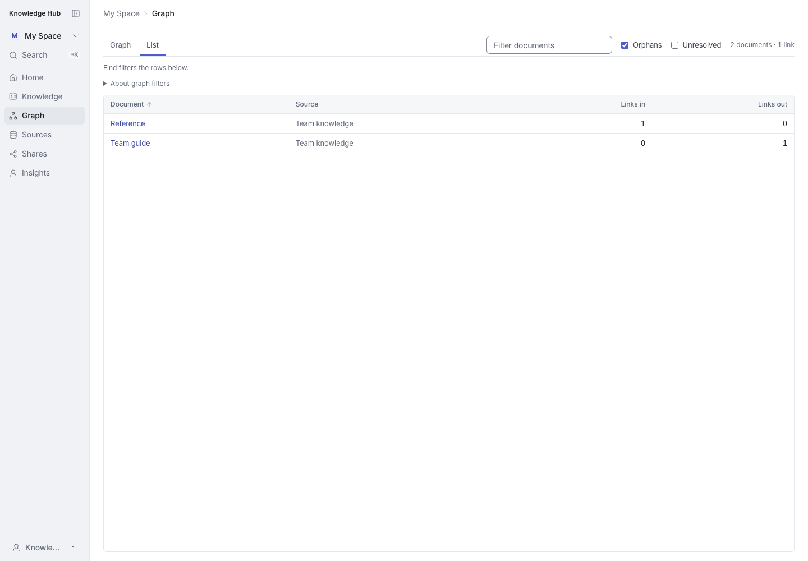
流程只說明一次，限制放到 Prepare context 旁。
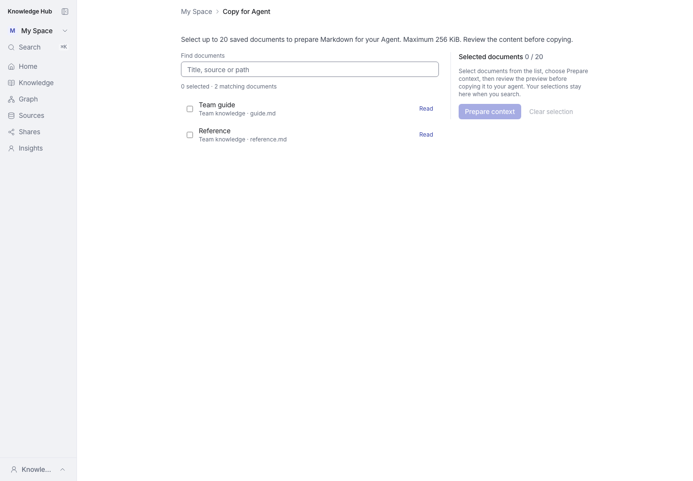
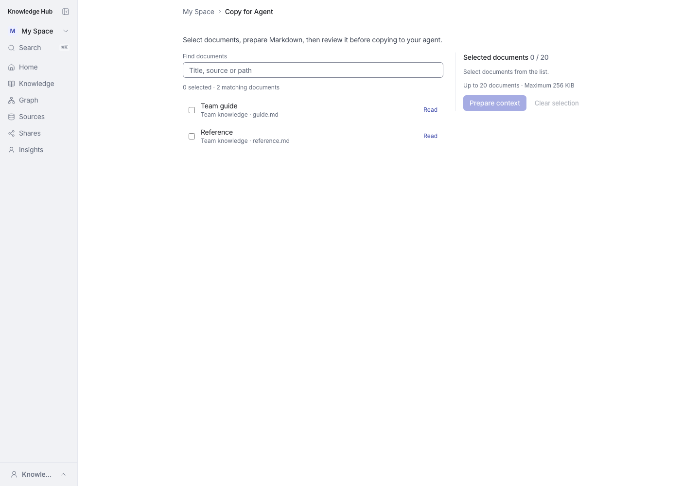
合併重複的頁首介绍。
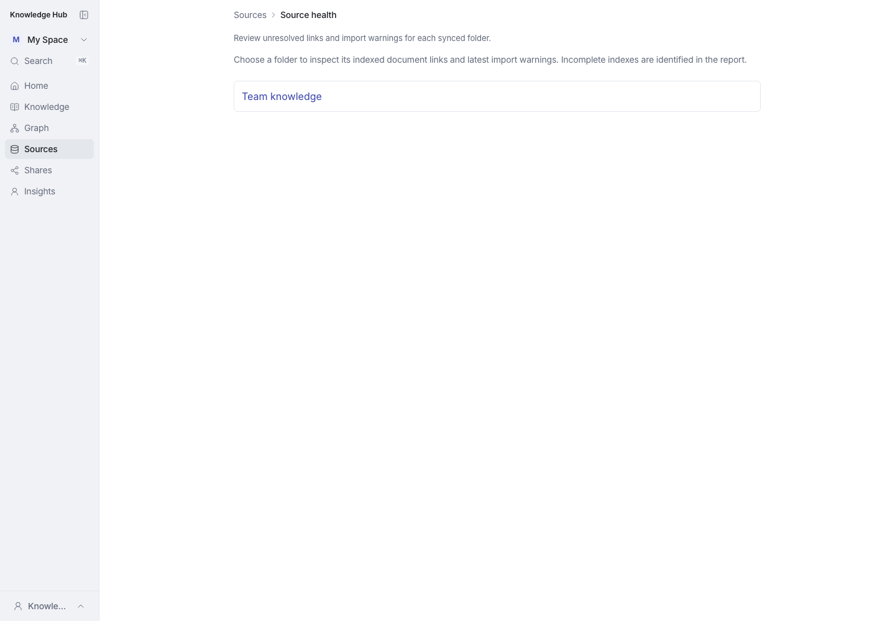
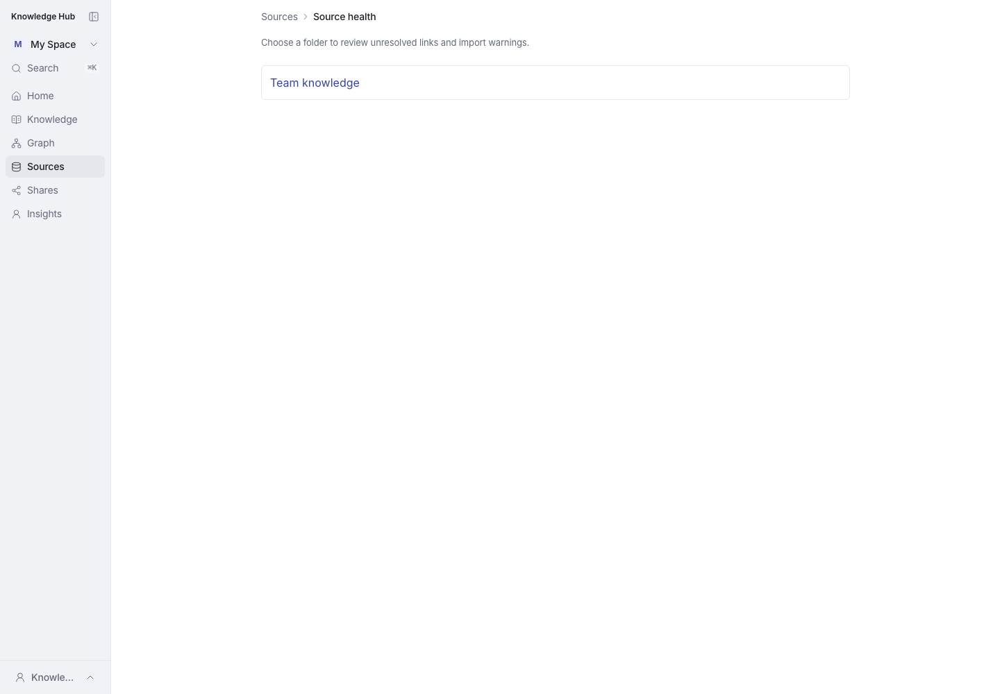
教學與完整排除路徑收合；警告仍可見。
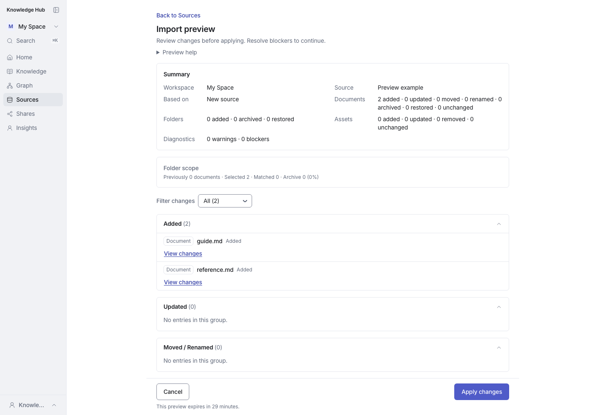
統計定義移到 How counts work。
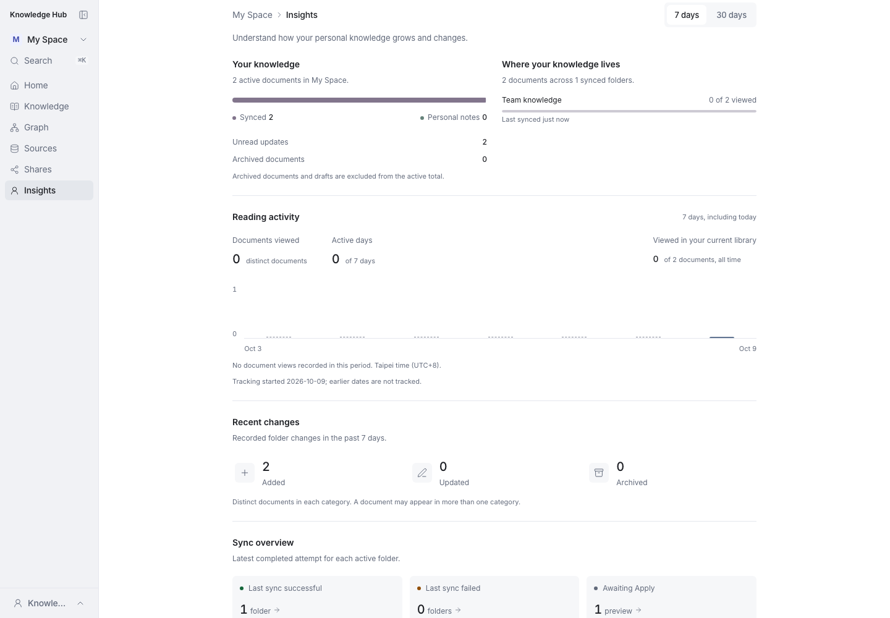
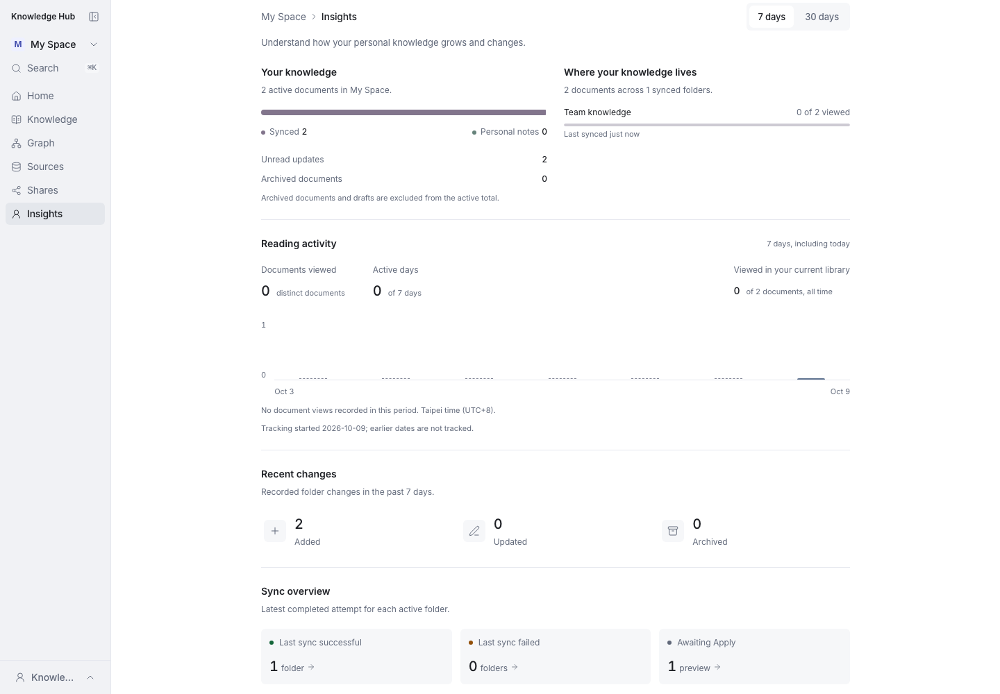